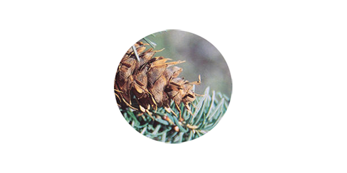
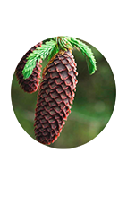
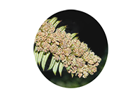

四川省森林资源总量持续增长，
裸子植物种类、数量居全国第一位。
其中，银杏科为四川独有，松科在全
国占比最大。
|  |  |
|||
别名：铁头榧、球果榧 红豆杉科 Taxaceae 国家二级保护植物 |
别名：红豆树、紫杉等 红豆杉科 Taxaceae 国家一级保护植物 |
别名：建柏、滇柏 柏科 Cupressaceae 国家二级保护植物 |
别名：黄帝杉、罗汉松 松科 Pinaceae 国家三级保护植物 |
别名：水树 松科 Pinaceae 国家二级保护植物 |
|  |  | |||
松科 Pinaceae 国家二级保护植物 |
别名：藏杉，桃松等 三尖杉科 Cephalotaxaceae 国家二级保护植物 |
松科 Pinaceae 国家二级保护植物 |
别名：活化石，梳子杉 杉科 Taxodiaceae 国家一级保护植物 |
苏铁科 Cycadaceae 国家一级保护植物 |
守林人在四川
守林人景祥俊 20年以梦为马走过6万公里巡山路
米仓山南麓的9000亩森林里，许多是景祥俊参与种下的。
从1997年中专毕业参加工作开始，她几乎全程目睹
了“天然林资源保护工程”对四川山林的影响和改
造，也见证着20年来四川林业的变化与进步。
关于退耕还林--
退耕还林就是从保护和改善生态环境出发，将易造成水土流失的坡耕地有计划，有
步骤地停止耕种，按照适地适树的原则，因地制宜的植树造林，恢复森林植被。退耕还
林工程建设包括两个方面的内容：一是坡耕地退耕还林；二是宜林荒山荒地造林。
由数据图可知，退耕还林还草的补贴远远大于投资，可见，这一措施可使贫困县的居
民脱贫有了希望，据调查， 首轮退耕还林启动15年后，67个贫困县已助近20万人脱贫，
也使得环境有了巨大改善。
20年筚路蓝缕，纤弱的幼苗长成了年轻的森林。
20年筚路蓝缕，四川用改革激发出守护绿水青山的活力。
数据来源：
中国环境保护厅
四川省环境保护局
四川省人民政府网
中国人民政府网
联合国粮农组织
世界银行
中国知网
关于退耕还林--
退耕还林就是从保护和改善生态环境出发，将易造成水土流失的坡耕地有计划，有
步骤地停止耕种，按照适地适树的原则，因地制宜的植树造林，恢复森林植被。退耕还
林工程建设包括两个方面的内容：一是坡耕地退耕还林；二是宜林荒山荒地造林。
由数据图可知，退耕还林还草的补贴远远大于投资，可见，这一措施可使贫困县的居
民脱贫有了希望，据调查， 首轮退耕还林启动15年后，67个贫困县已助近20万人脱贫，
也使得环境有了巨大改善。
20年筚路蓝缕，纤弱的幼苗长成了年轻的森林。
20年筚路蓝缕，四川用改革激发出守护绿水青山的活力。
数据来源：
中国环境保护厅
四川省环境保护局
四川省人民政府网
中国人民政府网
联合国粮农组织
世界银行
中国知网
中国环境保护厅
四川省环境保护局
四川省人民政府网
中国人民政府网
联合国粮农组织
世界银行
中国知网